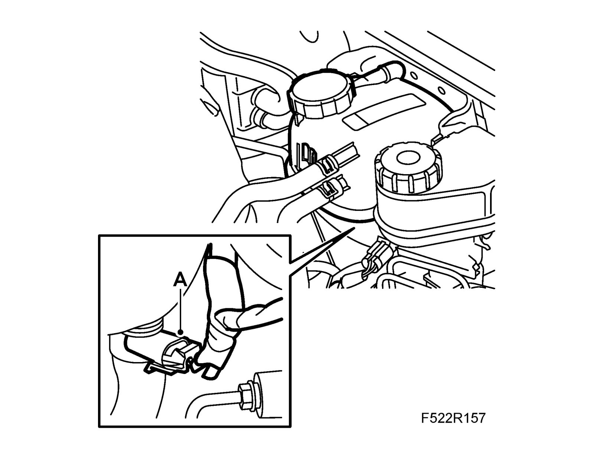
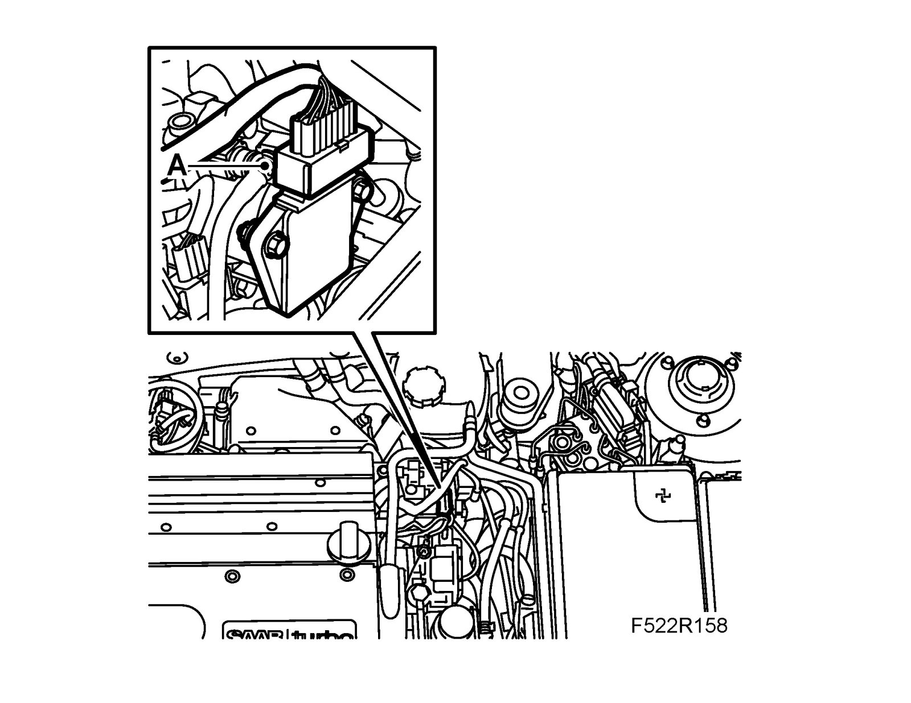
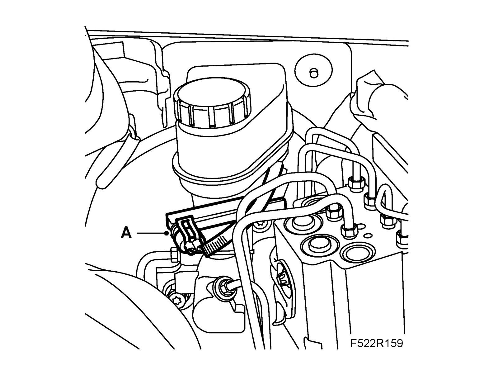

Brake Fluid Level Sensor/Switch: Service and Repair
Level sensor, brake fluid reservoir, LHDTo remove
1. Open the bonnet.
2. Fit the wing cover onto the left-hand front wing.
3. B207: Unplug the connector (A) for the coolant's level sensor.

4. B207: Unplug the connector (A) for the sensor unit, combustion (CDM).

5. Undo the coolant reservoir from the bulkhead and lift it up.
6. Unplug the connector (A) for the brake fluid reservoir's level sensor.

7. Remove the level sensor from the brake fluid reservoir.
To fit
1. Fit the level sensor to the brake fluid reservoir.
2. Plug in the connector (A) for the brake fluid reservoir's level sensor.

3. Fit the coolant reservoir.
4. B207: Plug in the connector (A) for the sensor unit, combustion (CDM).

5. B207: Unplug the connector (A) for the coolant's level sensor.

6. Remove the wing cover from the left-hand front wing.
7. Close the bonnet.